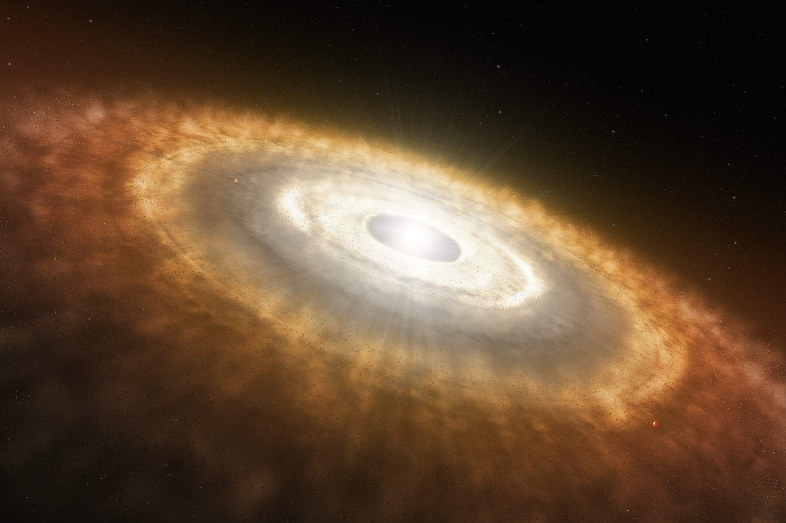

SISTEMA SOLAR

El sistema solar es un sistema planetario.
Un sistema planetario está constituido por una estrella (o en ocasiones un conjunto de estrellas) y los cuerpos celestes que giran a su alrededor
¿Cómo se formó?
Antes de existiera el sistema solar, su lugar lo ocupaba una enorme nube de gas molecular.
Una preturbación causada por una supernova cercana, hizo que la nebulosa comenzara a colapsar bajo su propia gravedad.

Hacia el centro de la nebulosa solar la presión y la temperatura aumentaron lo suficiente como para iniciar la fusión nuclear. Fue así como surgió el Sol.
Dentro del disco protoplanetario, las partículas de polvo y gas comenzaron a chocar y adherirse, formando cuerpos más grandes llamados planetesimales. Estos planetesimales continuaron creciendo mediante colisiones y acreción.
Los planetesimales se unieron para formar cuerpos aún más grandes conocidos como protoplanetas. Estos protoplanetas seguían acumulando material a través de la acreción y las colisiones.
A medida que el Sol joven comenzó a brillar intensamente, los fuertes vientos solares soplaron el gas y el polvo remanente del disco protoplanetario hacia el espacio interestelar, dejando solo los cuerpos sólidos.

Los protoplanetas en las regiones internas del disco se convirtieron en los planetas rocosos (Mercurio, Venus, Tierra y Marte). En las regiones externas más frías, se formaron los planetas gigantes gaseosos (Júpiter y Saturno) y los gigantes helados (Urano y Neptuno).
Además, otros cuerpos como asteroides, cometas y lunas también se formaron durante este período.